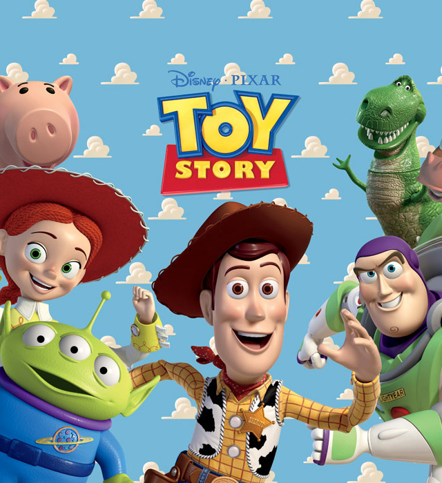

POST 제목
2020.11.25

그래미 어워즈 후보로 방탄소년단이 지명되자 환호성이 터져나옵니다.
[저스틴 비버의 인텐션! BTS의 다이너마이트!]
베스트 팝 듀오 그룹 퍼포먼스 부문 다섯 후보에 저스틴 비버, 레이디 가가 등 유명 팝가수들과 나란히 이름을 올렸습니다.
지난해엔 시상자 자격으로, 올해는 아시아 가수 최초로 그래미 합동 무대에 오르긴 했지만 후보로 입성하는 것은 처음입니다.
이로써 방탄소년단은 한국 가수로는 최초로 미국 3대 음악시상식에서 모두 후보에 오르는 기록을 갖게 됐습니다.
방탄소년단은 그동안 그래미 상을 받고 싶다고 수차례 밝혀왔습니다.
국내 클래식이나 국악 관계자가 그래미 후보에 오르거나 수상한 적은 있지만 한국 대중음악 후보 지명은 처음입니다.
최근 인기 상승세를 타며 신인상 후보 지명 가능성이 제기됐던 블랙핑크는 후보에 오르지 못했습니다.
다음 달 7일부터 내년 1월 4일까지 수상자를 가리기 위한 최종 투표가 이뤄지며 현지시간으로 내년 1월 31일 그래미 시상식에서 최종 수상자가 발표됩니다.
POST 제목
2020.11.25
블로터는 라이온스튜디오의 최하늬 프로덕트 매니저를 만나 에인션트 배틀과 하이브리드 캐주얼 모바일 게임의 비전을 청취했다. 다음은 최 매니저와의 일문일답.
Q. 라이온스튜디오는 어떤 회사인가.
A: 출시, 디자인, 수익화 전략 등 게임의 모든 측면을 최적화할 수 있게 개발자를 지원해주는 모바일 게임 스튜디오다. 2018년 설립 이후 지금까지 79개의 모바일 게임을 출시했고 수억 회에 이르는 다운로드 수를 달성했다. 이 중 16개 게임은 미국 앱스토어의 무료 게임 차트에서 1위에 등극했고 출시한 게임의 대다수가 애플 앱스토어와 구글플레이 스토에서에서 상위 10위권에 진입하도록 이끌었다.
Q. 현재 어떤 직무를 담당하고 있나.
A: 현재 라이온스튜디오의 프로덕트 디렉터로 근무하고 있다. 자사에서 출시하는 게임의 제품 로드맵에 주력한다. 제품 관리, 게임 디자인 및 품질 보증팀을 총괄하고 게임 디자이너, 엔지니어, 아티스트 및 타사 팀과 함께 라이온스튜디오 모바일 게임의 새 기능과 전략을 수립하고 이행하는 역할이다.